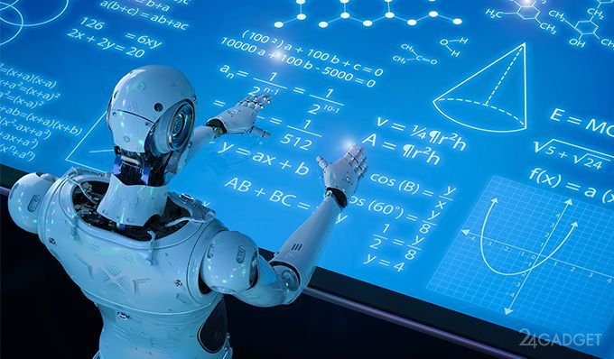

Эксперты выделяют шесть направлений развития искусственного интеллекта в 2022 году.
1-Дополнительная рабочая сила. Это даст возможность повысить эффективность работы людей.
2-Распознавание речи. Вероятнее всего, можно будет создать речь, которая звучать станет в точности как человеческая.
3-ИИ в информационной безопасности. Роботы будут помогать специалистам по информационной безопасности выявлять потенциальные угрозы.
4-Low- и zero-code в бизнесе. Искусственный интеллект в этом случае будет переводить действия человека в программный код. Благодаря no-code-системам создавать программы и сервисы смогут даже обычные пользователи.
5-Автопилотирование. Это связано не только с личными машинами, но и с другим транспортом.
6-Искусство. Создание различных произведений при помощи нейросетей. Это могут быть игр и картины.
Как будет выглядеть следующее поколение искусственного интеллекта? Какие новые подходы к ИИ откроют невообразимые сегодня возможности в технологиях и бизнесе? В статье Роба Тэйвза «Следующее поколение искусственного интеллекта», опубликованной в Forbes, освещаются три новых направления ИИ, которые в ближайшие годы изменят и саму область, и общество.
1. Обучение без учителя
Доминирующая парадигма в мире ИИ сегодня — это «обучение с учителем» (Supervised learning — способ машинного обучения, в ходе которого испытуемая система принудительно обучается с помощью примеров «стимул-реакция»). При обучении с учителем модели ИИ обучаются на основе наборов данных, которые люди собрали и пометили в соответствии с заранее определенными категориями.
Хотя контролируемое обучение способствовало значительному прогрессу в области ИИ за последнее десятилетие — от автономных транспортных средств до голосовых помощников — оно имеет серьезные ограничения.
Процесс пометки тысяч или миллионов точек данных вручную может быть чрезвычайно дорогим и трудозатратным. Тот факт, что люди должны маркировать данные вручную, прежде чем модели машинного обучения смогут их обработать, стал серьезным узким местом в технологии ИИ.
На более глубоком уровне обучение с учителем представляет собой узкую и ограниченную форму обучения. Вместо того, чтобы исследовать и усваивать всю скрытую информацию, взаимосвязи и последствия в определенном наборе данных, контролируемые алгоритмы ориентируются только на концепции и категории, которые исследователи определили заранее.
Напротив, «обучение без учителя» (Unsupervised learning — способ машинного обучения, при котором испытуемая система спонтанно обучается выполнять поставленную задачу без вмешательства со стороны человека) — это подход к ИИ, при котором алгоритмы обучаются на основе данных без ярлыков или меток, проставляемых человеком.
Многие лидеры ИИ рассматривают обучение без учителя как следующий большой рубеж в области ИИ. По словам легенды искусственного интеллекта Яна ЛеКуна:
«Следующая революция в области искусственного интеллекта не будет контролироваться человеком».
Профессор Калифорнийского университета в Беркли Джитенда Малик выразилась еще ярче:
«Категории данных — это опиум для исследователей машинного обучения».
Как работает обучение без учителя? Система узнает о некоторых частях мира на основе других частей мира. Наблюдая за поведением, закономерностями и отношениями между объектами — например, словами в тексте или людьми в видео — система загружает общее понимание своей среды. Некоторые исследователи резюмируют это фразой «предсказывать все, исходя из всего остального».
Неконтролируемое обучение более точно отражает то, как люди познают мир: через открытое исследование и вывод, без необходимости использования «вспомогательных колес» контролируемого обучения. Одним из его фундаментальных преимуществ является то, что в мире всегда будет гораздо больше немаркированных данных, чем маркированных (а первые гораздо легче найти).
По словам ЛеКуна, который предпочитает другой термин — обучение с самоконтролем, «при обучении с самоконтролем часть входных данных используется в качестве контролирующего сигнала для прогнозирования оставшейся части входных данных … Подробные знания о структуре мира можно получить посредством обучения с самоконтролем, а не с помощью других парадигм искусственного интеллекта, потому что данные неограниченны, а количество обратных связей, предоставляемой каждым предметом, огромно».
Обучение без учителя уже оказывает преобразующее влияние на обработку естественного языка (NLP). В последнее время NLP добилось невероятных успехов благодаря новой архитектуре обучения без учителя, известной как Transformers, которая возникла в Google около трех лет назад.

Попытки применить обучение без учителя к другим областям ИИ пока находятся на начальных этапах, но быстро прогрессируют. Возьмем один пример. Стартап под названием Helm. ai пытается использовать обучение без учителя, чтобы обойти лидеров в индустрии автономных транспортных средств.
Многие исследователи считают обучение без учителя ключом к развитию ИИ человеческого уровня. По словам ЛеКуна, овладение обучением без учителя — «величайшая проблема в области машинного обучения и искусственного интеллекта в ближайшие несколько лет».
2. Интегрированное обучение
Одна из главных проблем цифровой эры — конфиденциальность данных. Поскольку данные являются источником жизненной силы современного ИИ, проблемы конфиденциальности данных играют значительную (и часто ограничивающую) роль в траектории развития ИИ.
Таким образом, ИИ, обеспечивающий сохранение конфиденциальности (то есть методы, которые позволяют моделям ИИ учиться на основе наборов данных, не ставя под угрозу их конфиденциальность) становится все более важной задачей. Возможно, наиболее многообещающим подходом к ИИ, сохраняющим конфиденциальность, является интегрированное обучение.
Концепция интегрированного обучения была впервые сформулирована исследователями Google в начале 2017 года. За последний год интерес к интегрированному обучению резко вырос: за первые шесть месяцев 2020 года было опубликовано более 1000 исследовательских работ на эту тему, в то время как за весь 2018 год подобных исследований было сделано всего 180.
3. Transformers
Мы вступили в золотую эру обработки естественного языка.
Этим летом OpenAI выпустила GPT-3 — самую мощную языковую модель из когда-либо созданных, и сразу очаровала мир технологий. Был установлен новый стандарт в NLP: у ИИ появился навык писать стихи, заниматься функциональным программированием, составлять продуманные деловые письма, писать статьи о себе и многое другое.
GPT-3 — это всего лишь последняя (и самая крупная) в череде моделей NLP с аналогичной архитектурой — Google BERT, OpenAI GPT-2, FacebookRoBERTa и других, — которые переопределяют возможности NLP.
Ключевым технологическим прорывом, лежащим в основе этой революции в языковом ИИ, является технология Transformers.
Transformers был представлен в исторической исследовательской работе 2017 года. Раньше все современные методы NLP основывались на рекуррентных нейронных сетях (RNN). По определению, рекуррентные нейронные сети обрабатывают данные последовательно, то есть по одному слову за раз, в том порядке, в котором они появляются.
Великое нововведение Transformers заключается в том, чтобы сделать языковую обработку распараллеленной: все токены в заданном теле текста анализируются одновременно, а не последовательно. Для поддержки этого распараллеливания Transformers в значительной степени полагаются на механизм ИИ, известный как внимание. Внимание позволяет модели рассмотреть отношения между словами независимо от того, насколько они удалены друг от друга, и определить, на какие слова и фразы в отрывке нужно «обратить внимание».
Почему так важно распараллеливание? Потому что это делает Transformers намного более эффективными с точки зрения вычислений, чем RNN, а это означает, что их можно обучать на гораздо больших наборах данных. GPT-3 был обучен примерно 500 миллиардам слов и состоит из 175 миллиардов параметров, превосходя любую существующую RNN.
Transformers до сих пор были связаны почти исключительно с NLP благодаря успеху таких моделей, как GPT-3. Но только в этом месяце была выпущена революционная новая статья, в которой рассказывается о том, как Transformers успешно применяются в компьютерном зрении. Многие исследователи ИИ считают, что эта работа может предвещать новую эру в компьютерном зрении.
В то время как ведущие компании в области ИИ, такие как Google и Facebook, начали запускать в производство модели на основе Transformers, большинство организаций все еще находятся на ранних этапах производства и коммерциализации этой технологии. OpenAI объявила о планах сделать GPT-3 коммерчески доступным через API, что могло бы создать целую экосистему стартапов, создающих приложения на его основе.
Есть подозрение, что Transformers станут основой для целого нового поколения возможностей ИИ в предстоящие годы, начиная с естественного языка. Каким бы захватывающим ни было последнее десятилетие для ИИ, оно может оказаться лишь прелюдией к предстоящему десятилетию.